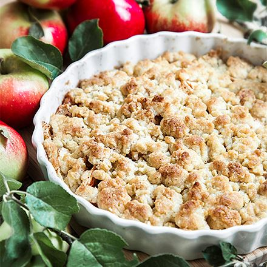

Glutenfri äppelpaj

Här kommer receptet på en väldigt god och knäckig glutenfri äppelpaj. Receptet räcker till ca fyra hungriga personer:) Går även att göra med vanligt vetemjöl, ta 2 dl istället. Och äpplena kan bytas ut mot annan frukt/bär efter tycke ock smak.
Ingredienser
- 150g smör
- 3 dl havregryn (ren havre)
- 1 tsk bakpulver
- 1.5 dl strösocker
- 1 tsk vaniljsocker
- 0.25 tsk salt
- 2.25 dl glutenfri mjölmix
- 2-3 äpplen
- 1 tsk kanel
Att göra
- Sätt ugnen på 200 grader.
- Smält smöret i en stor kastrull.
- Rör ner alla ingredienser utom äpplen och kanel i det smälta smöret.
- Skala äpplena och skär dem i bitar.
- Lägg äppelbitarna i en smord pajform. Pudra över kanel.
- Fördela pajsmeten ovanpå äpplena.
- Grädda pajen i mitten av ugnen i 200 grader i ca 25 minuter.
- Servera pajen ljummen med vaniljsås eller glass.